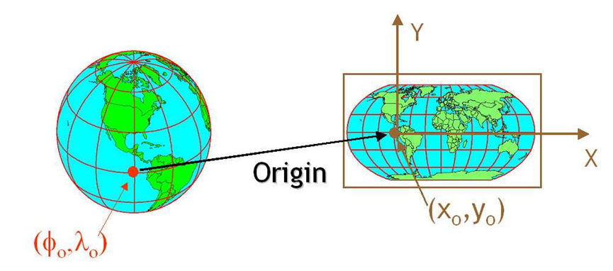
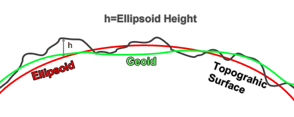
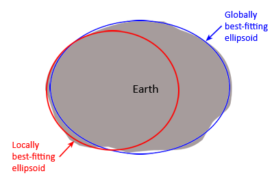
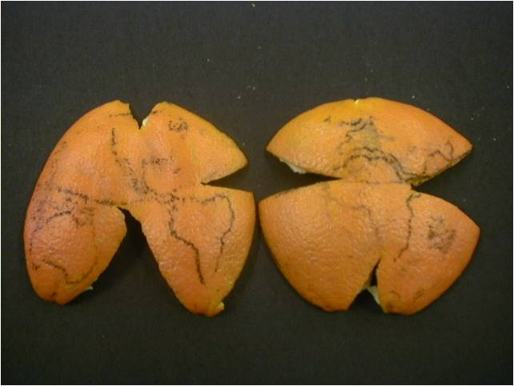
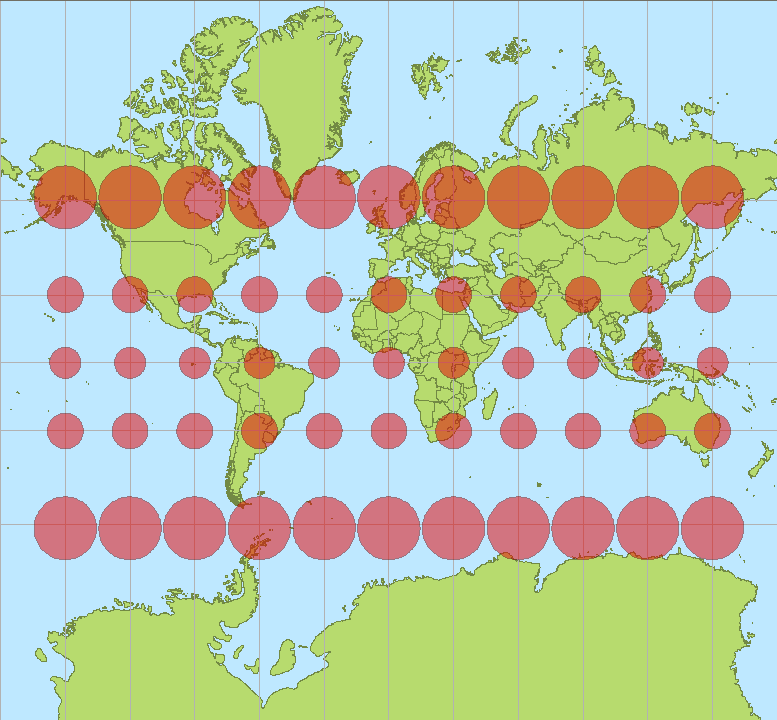

8. Review of Coordinate Reference Systems#
In this chapter, we will review Coordinate Reference Systems, and how to work with them in Python.
Attribution The content of this lecture are modified from three excellent sources: Introduction to Geospatial Raster and Vector Data with Python from Software Carpentry; Intro to Coordinate Reference Systems in Python from Earth Lab CU Boulder; Why do Coordinate Systems Matter from Anything Mapping.
8.1. Coordinate Reference Systems (CRS)#
We use coordinate systems to define the location of objects in space. In a 2-dimensional space, such a system consists of two values (typically names X ad Y). In higher dimensional spaces, we define extra coordinates to represent each dimension.
To define location of objects on the Earth surface, we also need to define a coordinate system. But in this case, the Earth surface is round and we need a coordinate system that adapts to its shape. When we make maps on paper or on a flat computer screen, we move from a 3-dimensional space (the globe) to a 2-dimensional space.
A Coordinate Reference System (CRS) defines the “flattening” of data that exists in a 3-D globe space to a 2-D flat space. The CRS also defines the the coordinate system itself. For the purpose of this lecture, we will focus on the components of CRS, and how to define them in your dataset/code.
There are numerous great resources to learn more about CRS and projections. You can check this one from QGIS documentation as an example.


Fig. 8.1 CRS defines the translation between a point on Earth surface and the same location on a flattened 2-D space (source: Intro to Coordinate Reference Systems in Python)#
8.2. Components of a CRS#
8.2.1. Datum#
A model of the shape of the earth. It has angular units (i.e. degrees) and defines the starting point (i.e. where is [0,0]?) so the angles reference a meaningful spot on the earth. Common global datums are WGS84 and NAD83. The WGS84 system uses an Ellipsoid rather than a Geoid. This is a generalized model of the earth, rather than a model of how the earth actually is. This is an important thing to understand when working with Z elevation values in WGS84 because it’s only a representation of the world, not an actual model.


Fig. 8.2 Difference between geoid and the modeled ellipsoid of the Earth surface (source: Why do Coordinate Systems matter)#
Datums can also be local - fit to a particular area of the globe, but ill-fitting outside the area of intended use. In this course, we will use the WGS84 datum which is the common datum for many datasets and applications around the world.


Fig. 8.3 Difference between a global and local ellipsoid (source: Why do Coordinate Systems matter)#
8.2.2. Projection#
Projections is a mathematical transformation of the angular measurements on a round earth to a flat surface (i.e. paper or a computer screen). A common analogy employed to teach projections is the orange peel analogy. If you imagine that the Earth is an orange, how you peel it and then flatten the peel is similar to how projections get made.


Fig. 8.4 Projection example using an orange peel (credit: Prof. Drika Geografia, Projeções Cartográficas)#
8.2.3. Coordinate System#
This is the the X, Y grid upon which the data is overlaid and how you define where a point is located in space.
8.2.4. Horizontal and vertical units#
The units used to define the grid along the x, y (and z) axis. These will be in the unis defined by the coordinate system of the CRS.
8.2.5. Additional Parameters#
Additional parameters are often necessary to create the full coordinate reference system. One common additional parameter is a definition of the center of the map. The number of required additional parameters depends on what is needed by each specific projection.
Further Reading
If you like to read more about CRS, and a problem-based guide of common CRS issues, check out the I Hate Coordinate Systems! blog.
8.3. Defining a CRS#
There are several common systems in use for storing and transmitting CRS information, as well as translating among different CRSs. These systems generally comply with ISO 19111. Common systems for describing CRSs include EPSG, OGC WKT, and PROJ strings.
8.3.1. EPSG#
The EPSG system is a database of CRS information maintained by the International Association of Oil and Gas Producers. The dataset contains both CRS definitions and information on how to safely convert data from one CRS to another. Using EPSG is easy as every CRS has an integer identifier, e.g. WGS84 is EPSG:4326. The downside is that you can only use the CRSs defined by EPSG and cannot customize them (some datasets do not have EPSG codes). epsg.io is an excellent website for finding suitable projections by location or for finding information about a particular EPSG code.
8.3.2. Well-Known Text (WKT)#
The Open Geospatial Consortium WKT standard is used by a number of important geospatial apps and software libraries. WKT is a nested list of geodetic parameters. The structure of the information is defined on their website. WKT is valuable in that the CRS information is more transparent than in EPSG, but can be more difficult to read and compare than PROJ since it is meant to necessarily represent more complex CRS information. Additionally, the WKT standard is implemented inconsistently across various software platforms, and the spec itself has some known issues.
8.3.3. PROJ#
PROJ is an open-source library for storing, representing and transforming CRS information. PROJ strings continue to be used, but the format is deprecated by the PROJ C maintainers due to inaccuracies when converting to the WKT format. The data and python libraries we will be working with in this class use different underlying representations of CRSs under the hood for reprojecting. CRS information can still be represented with EPSG, WKT, or PROJ strings without consequence, but it is best to only use PROJ strings as a format for viewing CRS information, not for reprojecting data.
PROJ represents CRS information as a text string of key-value pairs, which makes it easy to read and interpret.
A PROJ4 string includes the following information:
proj: the projection of the data
zone: the zone of the data (this is specific to the UTM projection)
datum: the datum used
units: the units for the coordinates of the data
ellps: the ellipsoid (how the earth’s roundness is calculated) for the data
Note that the zone is unique to the UTM projection. Not all CRSs will have a zone.
8.4. Examples#
Here is the WGS84 CRS defined in the three formats we discussed:
EPSG
EPSG:4326
WKT
GEOGCS["WGS 84",
DATUM["WGS_1984",
SPHEROID["WGS 84",6378137,298.257223563,
AUTHORITY["EPSG","7030"]],
AUTHORITY["EPSG","6326"]],
PRIMEM["Greenwich",0,
AUTHORITY["EPSG","8901"]],
UNIT["degree",0.0174532925199433,
AUTHORITY["EPSG","9122"]],
AUTHORITY["EPSG","4326"]]
PROJ
+proj=longlat +datum=WGS84 +no_defs +type=crs
8.5. Tissot’s indicatrix#
Developed by French mathematician Nicolas Auguste Tissot, Tissot’s indicatrix characterizes local distortions due to map projection. A single indicatrix describes the distortion at a single point. Because distortion varies across a map, generally Tissot’s indicatrices are placed across a map to illustrate the spatial change in distortion.


Fig. 8.5 The Mercator projection with Tissot’s indicatrices (source: Stefan Kühn)#